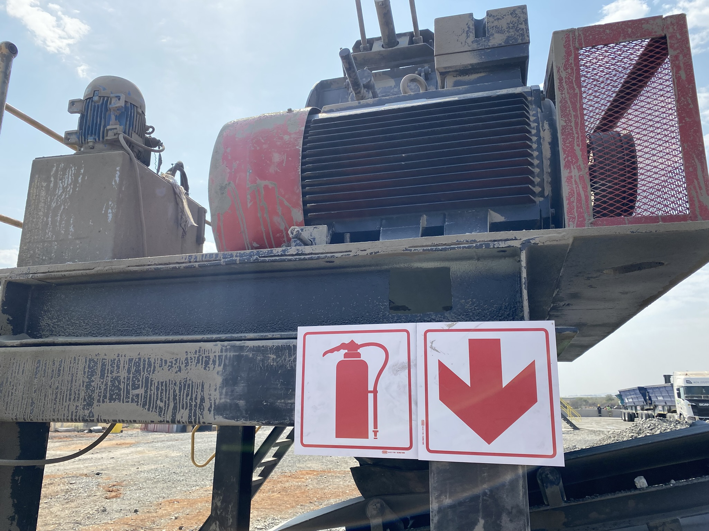

Electrical Power Systems · Crusher Plant
Crusher Plant Power Systems
Electrical power-system design for a crusher plant, covering crusher motor supplies, long feeder routes and the supporting power infrastructure. Feeder routes extended to approximately 200 m.
Project overview
- VSI crusher: 500 kW motor with direct-on-line (DOL) starting.
- HSI crusher: 250 kW motor with direct-on-line (DOL) starting.
- Power-system design covering feeder cables, motor control centres (MCCs) and generator integration.
- Long-distance power distribution, with feeder routes up to approximately 200 m.
The work addressed the electrical requirements of a high-load crusher installation. Client and site details are not included.
Objectives
- Provide reliable motor supplies with suitable protection.
- Assess voltage drop on long feeders, including its effect on motor starting performance.
- Develop a cable design that balances electrical performance and cost.
- Coordinate crusher loads with MCC and generator infrastructure.
- Use applicable South African electrical standards as the design basis.
Applicable design standards
The design basis included the following standards relevant to the installation scope:
- SANS 10142-1: Wiring of premises — low-voltage installations.
- SANS 10198: Power cables with extruded insulation.
- SANS 60034 / IEC 60034: Rotating electrical machines.
- SANS 60947: Low-voltage switchgear and control gear.
- SANS 10292: Earthing of low-voltage electrical installations.
Lighting and power-quality standards are not listed here because their application to this project scope has not been confirmed.
Challenges and design approach
Long feeder runs combined with high-current crusher motors required attention to voltage drop and starting performance. DOL starting for both motors also made starting current and supply capacity important design considerations.
The power-system design considered the crusher loads alongside cable routing, MCCs and generator integration. Cable selection and feeder checks were treated as part of the overall system design rather than as an isolated equipment choice.
Project media



Engineering contribution
Contributed to the design of the crusher plant power systems, including cable feeders, MCCs and generator integration.
Engineering value
The project demonstrates the importance of considering motor starting, long-distance feeders and power-source coordination together when designing electrical systems for large crusher loads.
Specific cable sizes, calculated voltage-drop figures and commissioning results are not included here.